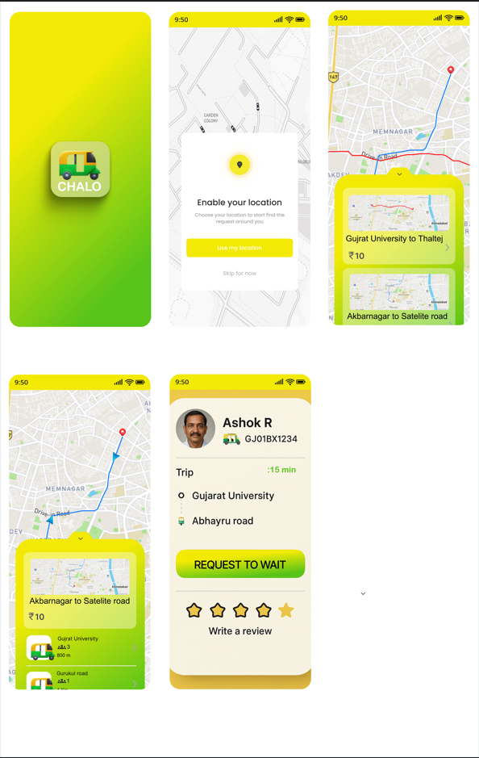

An original, full-stack startup idea designed to bridge the gap between affordable shared transit and premium tech reliability. From deep market research to Dockerized AWS deployment. This isn't a clone; it's a complete product lifecycle.

The Daily Struggle: Millions of commuters in Tier-1 and Tier-2 cities travel daily under the hot sun. Public transit schedules are unpredictable, and booking a private cab (like Uber or Ola) daily costs a fortune. The shared transit market (shared autos) operates entirely offline, leaving passengers guessing when their next ride will arrive, while drivers circle empty looking for passengers.
The Opportunity: There is a massive, unserved middle market. Bridging the "First & Last Mile" gap requires combining the unmatched affordability of offline shared transit with the premium tracking and AI technology of modern ride-hailing apps.
Chalo is a full-stack smart shuttle management and ride-hailing platform. It provides:
A stunning map-based UI providing real-time visualization of shuttles, transparent fixed fares (e.g., ₹10 per stop), and guaranteed rides.
A dedicated "Driver Dashboard" helping them select high-demand routes, navigate efficiently, and minimize empty trips (deadhead miles).
[Placeholder for User-Side Flow Screens]
The interface was meticulously crafted in Figma to prioritize speed and usability. I integrated a giant, gorgeous map right in the center of the experience, because a ride-hailing app needs a map taking up 70% of the screen.
AI Smart Assistant ("Bhaya"): A floating chat widget powered by AI. Just type "Gurukul to Thaltej?" and Bhaya instantly provides walking directions, ETAs, and suggests the right shuttle to board.
[Placeholder for Driver-Side Flow Screens]
Frontend: React (via Vite) packaged for mobile using Ionic Capacitor. Real-time route animation is powered by the Google Maps JavaScript API.
True Road-Aligned Pathfinding: Unlike simple straight lines, the database stores hundreds of intermediate coordinates for each route. The frontend interpolates these coordinates to animate the shuttle icon smoothly along the actual curves of the city roads.
Backend: A high-performance Node.js & Express server backed by an SQLite database (better-sqlite3). Authentication is handled securely via JWT and bcryptjs.
AWS DevOps: The entire stack is containerized using Docker (multi-stage builds). Deployment is fully automated via GitHub Actions. Any push to the main branch triggers a workflow that builds the Docker image, pushes it to Amazon ECR, and updates an Amazon ECS Task Definition to perform a rolling update without downtime.
Chalo is more than just an app; it's a movement to organize the disorganized transit sector. It proves my capability to take a raw startup idea, conduct user research, design the interface, code the full stack, and deploy it to enterprise-grade AWS infrastructure.